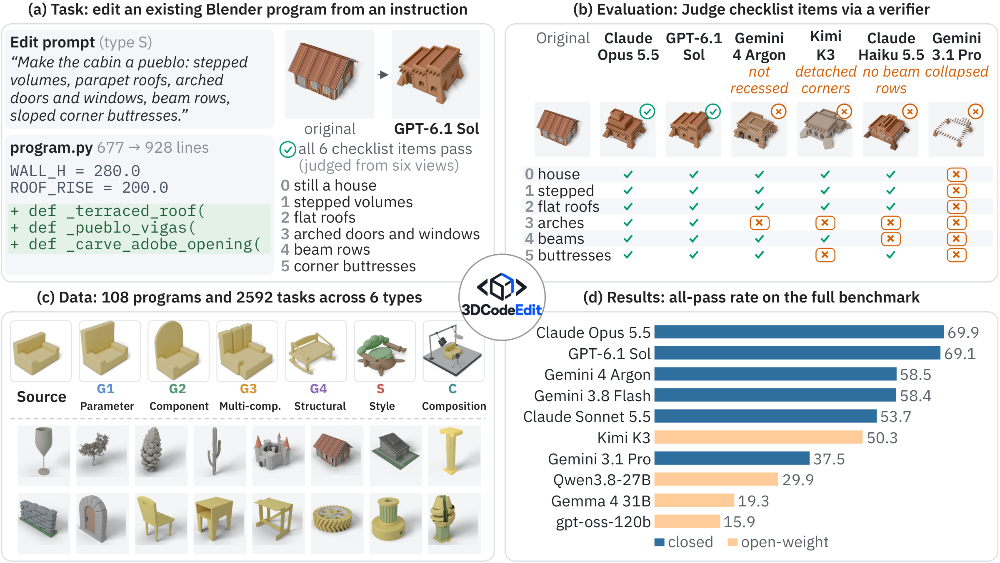
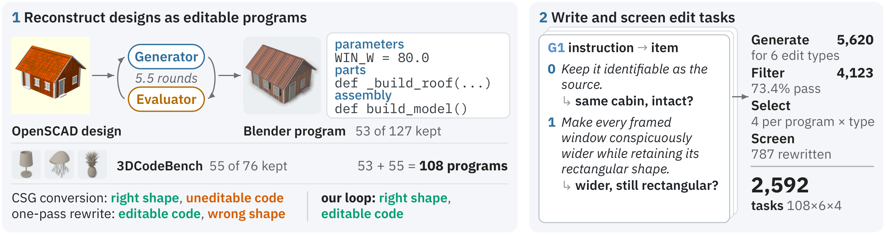

Editing is hard, and harder with scope
The average all-pass rate falls from 82.9% on parameter edits to 24.6% on structural edits. Even Claude Opus 5.5 and GPT-6.1-sol pass fewer than 60% of structural and style edits.
1New York University 2Carnegie Mellon University 3UNC Chapel Hill 4University of Illinois Urbana-Champaign 5The University of Texas at Austin 6Google
*Equal contribution

Language models increasingly create 3D content through code, with practical workflows often relying on editing existing programs rather than regenerating them, for speed and precise control. Such edits require understanding what a program builds and foreseeing how a change reshapes it, yet prior benchmarks mostly evaluate generation or simple edits against a reference. In this paper, we introduce 3DCodeEdit, a benchmark of 2,592 instruction-guided editing tasks over 108 Blender programs that construct objects entirely in code. Its edits range from parameter to structural changes, style redesign, and scene composition, and are judged from renders against human-reviewed checklists. Across 17 models, the average success rate is only 37%, and even the strongest models complete fewer than 60% of structural and style edits. As models become more capable, their failures shift to geometric foresight, where the code runs but builds the wrong shape. We therefore study whether multi-turn feedback can compensate for this missing foresight. Feedback from a separate reviewer model that describes how the renders differ from the request helps most, more than maximum reasoning effort or an agent harness, and can let a 27B model surpass the single-shot rate of a 2.8T-parameter model.
The average all-pass rate falls from 82.9% on parameter edits to 24.6% on structural edits. Even Claude Opus 5.5 and GPT-6.1-sol pass fewer than 60% of structural and style edits.
Weak models misread the task or write code that crashes. Stronger models write code that runs but builds the wrong shape: this share of failures doubles across capability bands.
A separate reviewer that describes how the renders differ from the request lifts GPT-6.1-sol by 21 points, more than its best reasoning effort (74.7%) or an agent harness.
The task
Each task gives a model a complete Blender Python program and an edit instruction, and asks for the complete edited program. The instruction says how the object should look; the model can only change the code. It must work out what shape the code builds, foresee how a change reshapes it, and write code that runs. Both programs are executed and rendered from six matched views, and a multimodal verifier answers one yes/no question per checklist item: one for each requested change, plus one for preserving the rest. A task passes only if every item passes.
Drag to rotate · scroll or pinch to zoom · double-click to reset. Both views share one camera and, unless marked, one scale.
The benchmark
A meaningful edit needs a program that exposes the object's parameters and parts. We reconstruct 53 OpenSCAD designs of buildings, furniture, and mechanical parts shared online as editable Blender programs, using a generator and an evaluator agent grounded in renders, and add 55 procedural programs from 3DCodeBench. For each program and edit type we generate edit prompts with checklists, then filter, select, and screen them for ambiguity under human supervision.

Click a program to inspect it in 3D.
Examples
Example edits from the main evaluation, each with its judgment on every checklist item.
Drag to rotate · scroll or pinch to zoom · double-click to reset.
Leaderboard
Percentage of the 2,592 tasks whose edited program runs, renders, and passes every checklist item. Each model edits once. Unless noted otherwise, every experiment runs editors at medium reasoning effort (or the closest equivalent), and the verifier, Gemini 3.8 Flash, at high. Exec. is the share of edited programs that execute and render. Click a column to sort.
G1–G4: geometric edits of increasing scope (parameter, component, multi-component, structural). S: style redesign. C: scene composition.
Analysis
44 models released since November 2024, on the 312-task analysis subset. The best all-pass rate took 16 months to rise from 9.0% to 40.1% (to March 2026) and only six more months to reach 67.6%. The largest gains since April 2026 are on style (+44 points) and composition (+40) edits, which earlier models rarely passed.
We code every failure of 76 configurations (44 models and 32 further effort levels) by the first stage at which the edit diverges from the instruction. Weak models mostly fail before the shape is built: they misread the instruction or the program, or write code that does not run. As models improve, failures move to geometric foresight: the code runs and changes the intended parts, but builds the wrong shape. Its share of failures doubles from 18% for the weakest models to about 40% for the strongest, where it is the most common stage.
Most common geometric-foresight mechanisms, as shares of all failures. Models usually make the requested change but misjudge how it fits with the rest of the object.
Multi-turn editing
If strong models fail mainly because they cannot foresee what their code builds, then telling them what it built should help more than letting them think longer. We test this with multi-turn editing: after each edit, the editor receives feedback on the result and may revise, for up to 8 rounds.
An editor that checks its own renders does better than one that only rereads its code, for every editor that can see images (up to +7.1 points for GPT-6-luna). The gain comes from seeing the result, not from the extra rounds.
Strong editors rarely change an edit they have checked themselves: GPT-6.1-sol, Claude Opus 5.5 and Claude Sonnet 5.5 revise at most 0.6 times on average, against 2.7 or more times with a reviewer. A separate reviewer that reports only which requirements are not met already helps, and describing how the renders differ from each one adds up to 10 more points.
Feedback on the result helps more than extra computation. With a reviewer, GPT-6.1-sol reaches 85.6%, while its best reasoning effort reaches 74.7%; a coding agent that renders and checks its own result does no better than single-shot for GPT-6-luna.
GPT-6-luna edits worse than the three strongest editors, yet reviews them about as well as they review themselves: judging an edit is easier than making it. Weak editors, however, cannot judge their own edits. With GPT-6-luna instead of self-review, Qwen3.8-27B rises from 37.2% to 50.3%, above the single-shot rate of the 2.8T-parameter Kimi K3 (46.8%).
Use the benchmark
Evaluating a model takes two steps: run inference, so that the model edits the source program of every task, then render, verify, and score the edited programs. Each step resumes where it stopped.
pip install -r requirements.txt # also install Blender 5.1.0
# 1. Run inference (example script for an OpenAI-compatible endpoint, with the paper's settings)
OPENAI_API_KEY=... python -m evaluation.inference --model my-model --out my-model.jsonl
# or use your own pipeline: prompts from `python -m evaluation.prompts`,
# one {"case_id", "response", "finish_reason"} line per task
# 2. Render each original/edited pair from six views
python -m evaluation.render --run runs/my-model --predictions my-model.jsonl \
--blender /path/to/blender --workers 32
# Judge every checklist item with Gemini 3.8 Flash
GEMINI_API_KEY=... python -m evaluation.verify --run runs/my-model --workers 32
# Compute all-pass rates
python -m evaluation.score runs/*Citation
@article{wang20263dcodeedit,
title = {{3DCodeEdit}: Benchmarking Instruction-Guided {3D} Program Editing},
author = {Wang, Binjie and Zhao, Xinran and Yu, Shoubin and Li, Xiang and Yong, Silong and
Yang, Chenyang and Chen, Tianyu and Du, Ruofei and He, He and Zhao, Chen and Wu, Tongshuang},
journal = {arXiv preprint},
year = {2026}
}